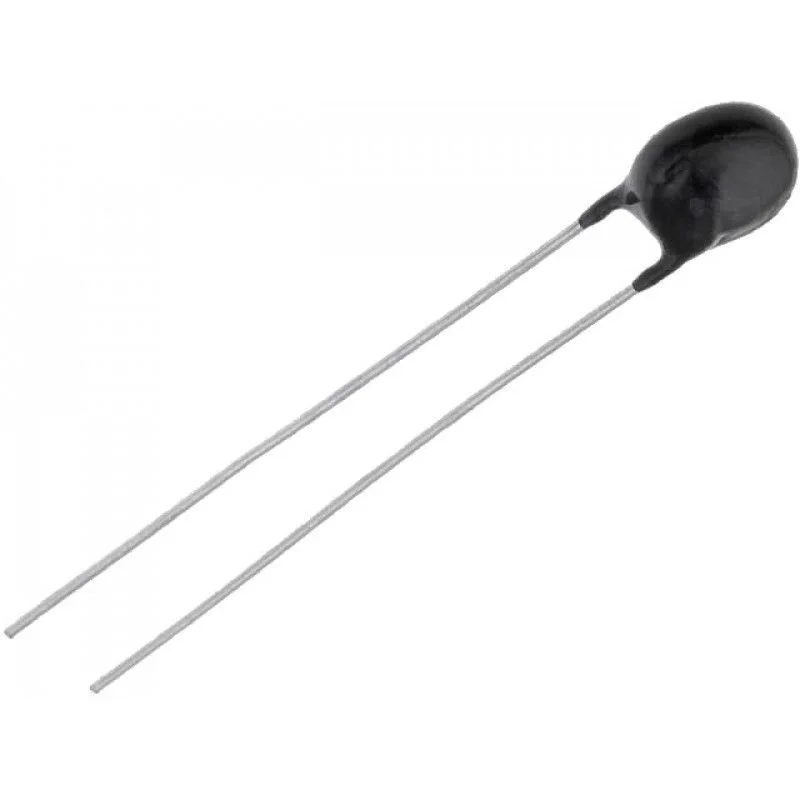
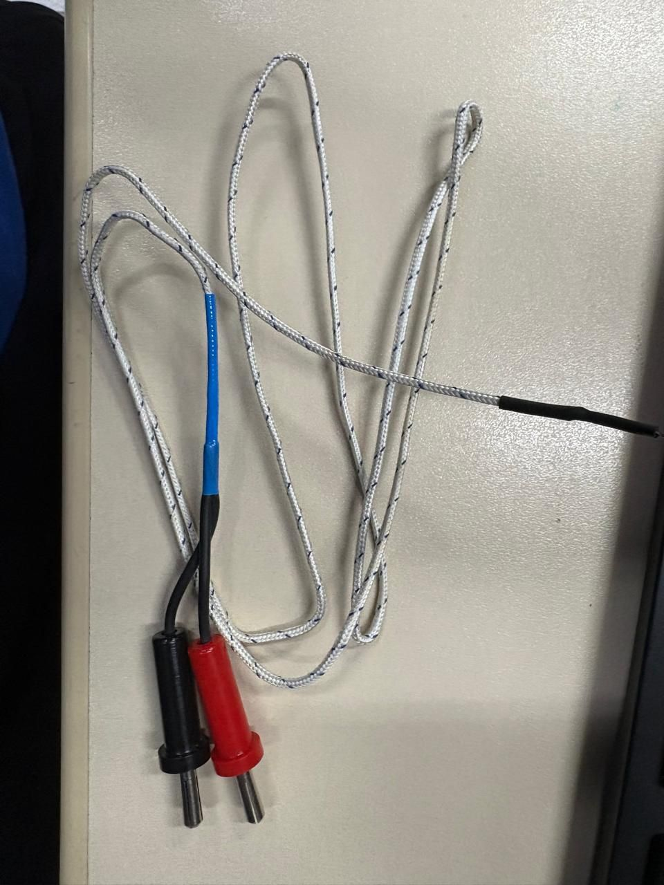
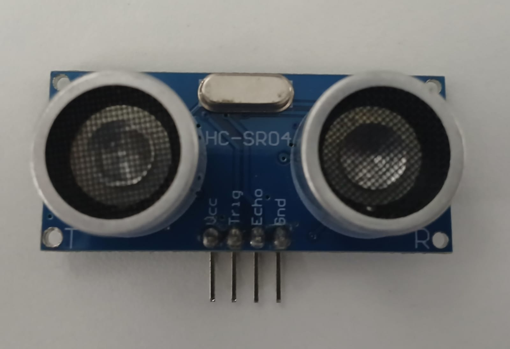
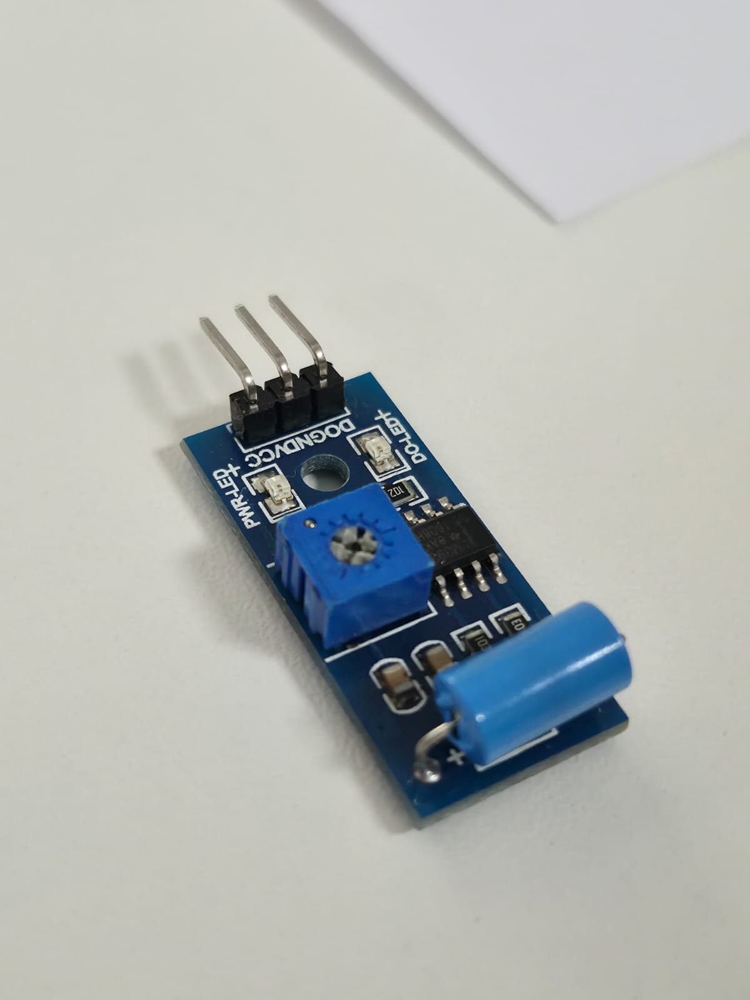
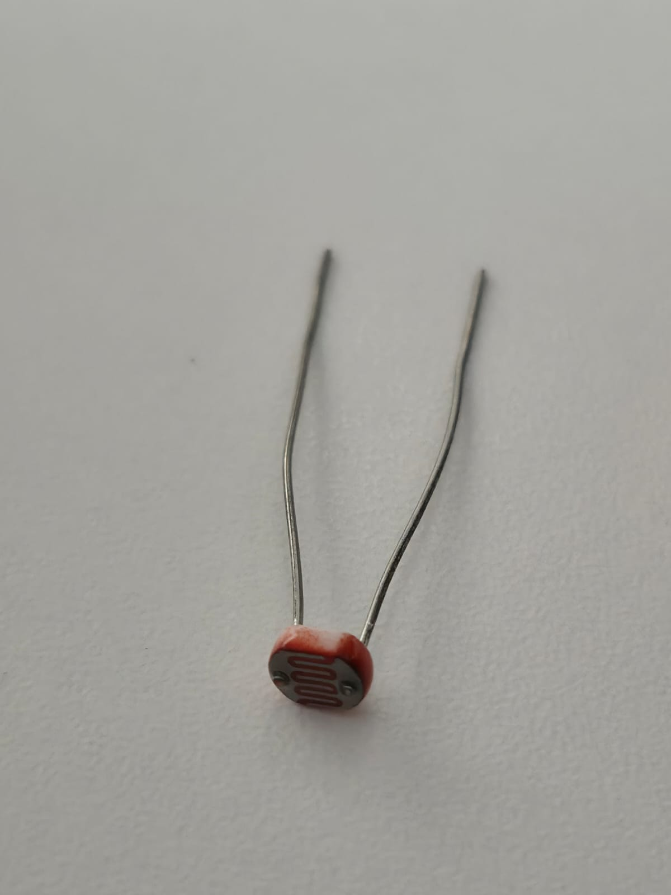
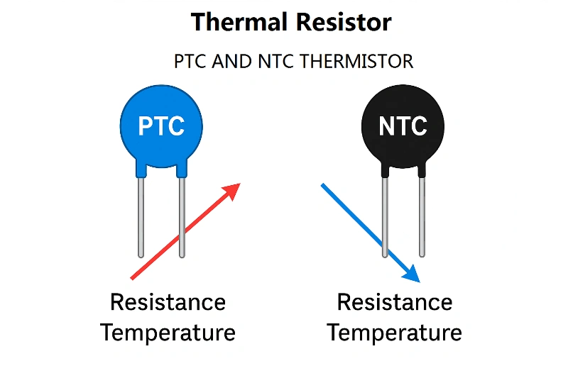
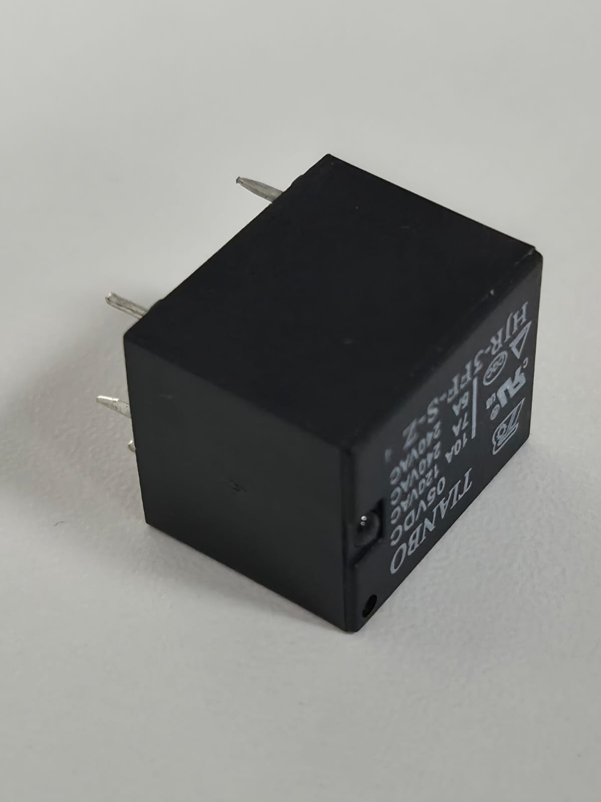

Parte Prática
Sensor NTC
- Mede a temperatura. A resistência diminui quando a temperatura aumenta, muito usado em termômetros e proteção de circuitos.

Sensor Termopar Tipo K
- Usado para medir temperaturas muito altas. Funciona gerando uma pequena tensão quando dois metais diferentes são aquecidos. Usado em fornos, indústrias, etc.

Exemplo de medição em milivolts (mV) do termopar Tipo K
Exemplo de dimerização de LED com programa temporizado
Exemplo de dimerização de LED com botão (push button)
Sensor ultrassônico
- Mede distância. Ele envia um som (ultrassom) e calcula o tempo que leva pra voltar. Usado em robôs, sensores de estacionamento, etc.

Sensor de cor
- Ele identifica cores (RGB). Detecta a luz refletida por um objeto. Usado em automação, robótica e seleção de peças.

Sensor de vibração
- Detecta movimentos ou tremores. Usado em alarmes, monitoramento de máquinas, detecção de impacto.

Sensor LDR (luz)
- Mede luminosidade. A resistência muda conforme a luz (mais luz = menor resistência). Usado em iluminação automática.

Sensor NTC/PTC
- São dois sensores de temperatura onde:
NTC: Resistência diminui com o calor;
PTC: Resistência aumenta com o calor;
Usados em controle térmico e proteção elétrica.

Atuador Relé
- Não é sensor, é um atuador. Funciona como um interruptor controlado eletricamente. Permite ligar/desligar dispositivos de maior potência (como lâmpadas ou motores) usando um sinal fraco (ex: Arduíno).
